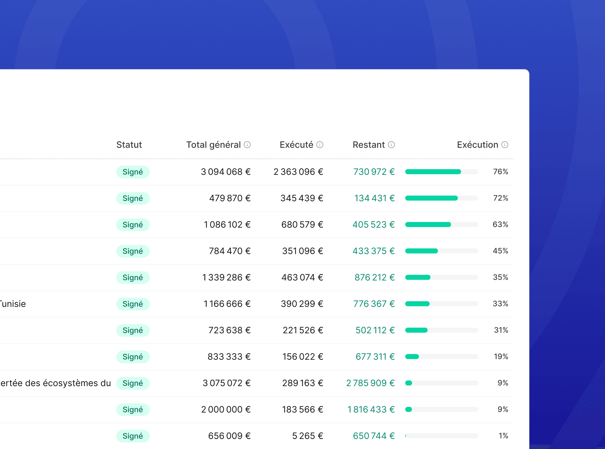

<!doctype html>
<html lang="fr"><head><meta charset="utf-8"><title>28 · Avant, après</title>
<link rel="stylesheet" href="../brand/marque.css"><link rel="stylesheet" href="../brand/ecrans.css"><link rel="stylesheet" href="sc.css">
<style>
  /* 28 · Avant, après : le même tableau de projets, livré en 2025 puis redessiné. Diptyque : à gauche la capture d'origine,
     montrée telle quelle (aucune retouche), à droite le nouveau tableau, rendu en direct. Mêmes projets, mêmes montants. */
  .plate{width:1400px;height:1120px;background:var(--papier)}
  .aa-g{position:absolute;left:0;top:0;bottom:0;width:560px;background:var(--sable);overflow:hidden}
  .aa-g img{position:absolute;right:-60px;top:286px;width:760px;border-radius:14px;box-shadow:0 30px 60px -30px rgba(70,35,10,.5);filter:saturate(.9)}
  .aa-d{position:absolute;left:560px;right:0;top:0;bottom:0;overflow:hidden}
  .aa-d .aq-i{position:absolute;inset:0;width:100%;height:100%;object-fit:cover;opacity:.9}
  .aa-t{position:absolute;top:118px;font-family:var(--titre);font-weight:900;font-size:86px;letter-spacing:-.055em;line-height:.9}
  .aa-s{position:absolute;top:214px;font-family:var(--mono);font-size:10.5px;letter-spacing:.08em;text-transform:uppercase;font-weight:500;opacity:.7}
  .aa-fen{left:64px;top:286px;width:880px}
  .aa-fen>section{grid-column:auto!important;width:100%;border:0;box-shadow:none}
  .aa-p{position:absolute;left:644px;bottom:92px;right:84px;display:flex;justify-content:space-between;align-items:flex-end;gap:30px}
  .aa-p p{margin:0;font-family:var(--titre);font-weight:800;font-size:30px;letter-spacing:-.035em;line-height:1.05;max-width:420px}
  .aa-p small{font-size:13px;line-height:1.45;max-width:250px;opacity:.75}
</style></head>
<body>
<div class="plate grain" id="p"></div>
<script src="../brand/marque.js"></script><script src="../brand/carte.js"></script><script src="../brand/ecrans.js"></script>
<script>
const M = Marque, C = M.COULEURS;
document.getElementById('p').innerHTML =
  `<div class="aa-g"><div class="aa-t" style="left:84px;color:rgba(42,30,23,.42)">Avant</div><div class="aa-s" style="left:86px">2025 · le tableau des projets, tel que livré</div></div>
   <div class="aa-d">
     <div class="aa-t" style="left:84px;color:${C.vermillon}">Après</div><div class="aa-s" style="left:86px">2026 · les mêmes projets, les mêmes montants</div>
     <div class="sc-fen aa-fen dj" style="display:block;min-height:0;width:742px;left:50px;top:286px">${M.app.blocProjets({ n: 6 })}</div>
   </div>
   <div class="aa-p net"><p>Mêmes chiffres. Une autre lecture.</p><small>L’empreinte dit la durée et l’avancement. Le repère noir dit où l’on devrait en être au prorata. Le code analytique reste sous les yeux.</small></div>` +
  M.entete() + M.foot('28 · Avant, après', 'GRDR · Djongoma');
window.pret = Promise.all([...document.images].map((i) => (i.decode ? i.decode().catch(() => 0) : 0)));
</script>
</body></html>
